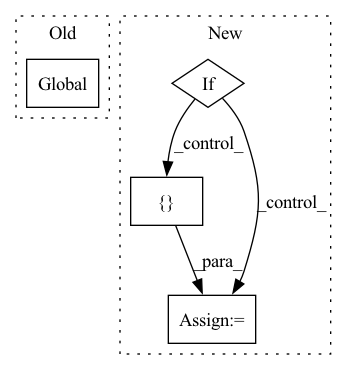

Pattern ID :14277

Before Change
os.environ["DMLC_NUM_SERVER"] = str(num_servers)
os.environ["DMLC_NUM_WORKER"] = str(num_workers)
global executor_shell
if len(hosts) == 1:
// single machine
// TODO: add hostdress validation check
if enable_PS:
After Change
parser.add_argument("command", nargs=argparse.REMAINDER,
help="Command to be executed.")
args = parser.parse_args()
if args.config is None:
assert args.workers > 0, \
"Please specify the configuration file or set the number of local workers."
settings = {"nodes": [{
"host": "localhost",
"servers": args.servers,
"workers": args.workers,
"chief": True,
}]}
else:
settings = yaml.load(open(args.config).read(), Loader=yaml.FullLoader)
attributes = set(["host", "servers", "workers", "chief"])
hosts = []
In pattern: SUPERPATTERN
Frequency: 3
Non-data size: 4
Instances
Fragment ID: 47314913
Project Name: hsword/hetu
Commit Name: 43f4467347abb96737657a61b2ea49506e240038
Time: 2021-09-02
Author: 657671989@qq.com
File Name: python/runner.py
M Class Name: AnonimousClass
N Class Name: AnonimousClass
M Method Name: main(0)
N Method Name: main(0)
M Parent Class:
N Parent Class:
M File Name: python/runner.py
N File Name: python/runner.py
M Start Line: 158
M End Line: 192
N Start Line: 150
N End Line: 206
'>
Before Change
mp_size = 1
mp_group = None
global cuda_device, transport_stream, PARTITION_ACTIVATIONS, buffer_0, buffer_1, buffer_0_offset, buffer_1_offset
if cuda_device is None:
see_memory_usage("First Forward Begining", force=True)
After Change
]
ctx.mark_non_differentiable(*non_grad_outputs)
if torch.is_tensor(outputs):
all_outputs += [outputs]
return outputs
else:
all_outputs += outputs
'>
Fragment ID: 47314915
Project Name: microsoft/deepspeed
Commit Name: ec8b1cb0a0a5752bba029da4bdc91616c0f5bec7
Time: 2021-02-12
Author: olruwase@microsoft.com
File Name: deepspeed/runtime/activation_checkpointing/checkpointing.py
M Class Name: CheckpointFunction
N Class Name: CheckpointFunction
M Method Name: forward(3)
N Method Name: forward(2)
M Parent Class: torch.autograd.Function
N Parent Class: torch.autograd.Function
M File Name: deepspeed/runtime/activation_checkpointing/checkpointing.py
N File Name: deepspeed/runtime/activation_checkpointing/checkpointing.py
M Start Line: 338
M End Line: 503
N Start Line: 373
N End Line: 564
'>
Before Change
// 因此需要解码的长度实际是 lengths - 1
decode_lengths = (caption_lengths - 1).tolist()
// 新建两个张量用于存放 word predicion scores and alphas
global device
predictions = torch.zeros(batch_size, max(decode_lengths), vocab_size).to(device)
alphas = torch.zeros(batch_size, max(decode_lengths), num_pixels).to(device)
// 在每一个时间步根据解码器的前一个状态以及经过attention加权后的encoder输出进行解码
After Change
// torch.cat([embeddings[:batch_size_t, t, :], attention_weighted_encoding], dim=1),
// (h[:batch_size_t], c[:batch_size_t])) // (batch_size_t, decoder_dim)
//teahcer forcing
if t==1 or (np.random.rand() < self.p) :
h = self.decode_step(
torch.cat([embeddings[:batch_size_t, t, :], attention_weighted_encoding], dim=1),
h[:batch_size_t]) // (batch_size_t, decoder_dim)
else:
h = self.decode_step(
torch.cat([self.embedding(torch.argmax(predictions[:batch_size_t, t, :],dim = 1)), attention_weighted_encoding], dim=1),
h[:batch_size_t]) // (batch_size_t, decoder_dim)
preds = self.fc(self.dropout(h)) // (batch_size_t, vocab_size)
predictions[:batch_size_t, t, :] = preds
'>
Fragment ID: 47314914
Project Name: qs956/latex_ocr_pytorch
Commit Name: 0455746d6d3141dfc06cd15fb9cd67a0b9defcfc
Time: 2020-03-21
Author: qs956@163.com
File Name: model/model.py
M Class Name: DecoderWithAttention
N Class Name: DecoderWithAttention
M Method Name: forward(5)
N Method Name: forward(4)
M Parent Class: nn.Module
N Parent Class: nn.Module
M File Name: model/model.py
N File Name: model/model.py
M Start Line: 231
M End Line: 250
N Start Line: 214
N End Line: 271